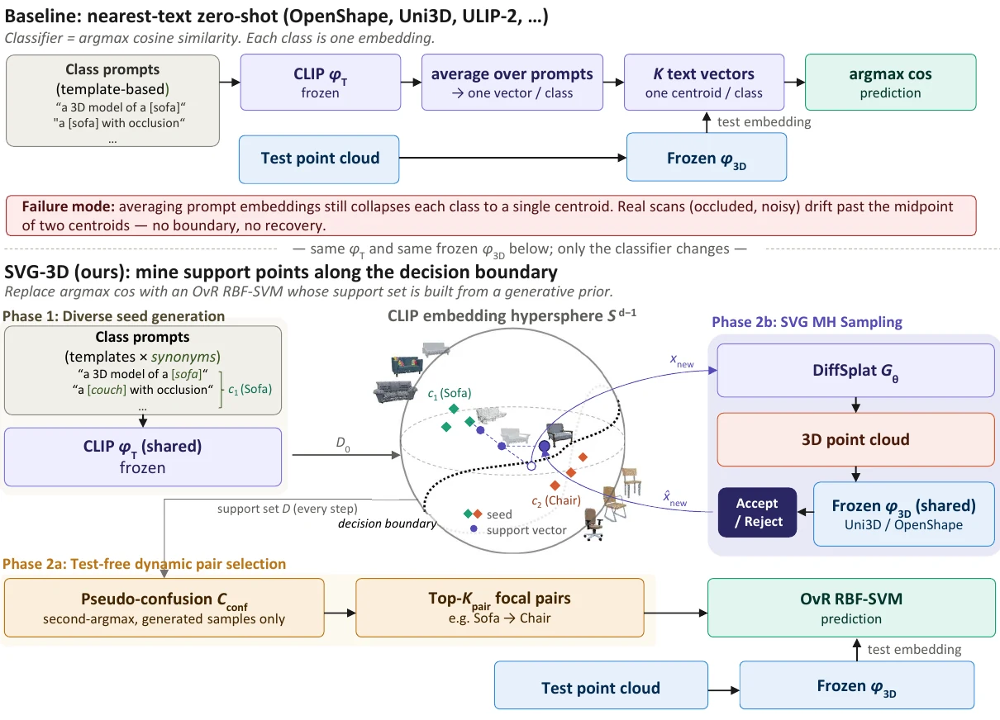

NeurIPS 2026, Sydney, Poster
SVG-3D Mining decision boundaries with generative splatting priors for zero-shot 3D classification
1 The University of Tokyo 2 Equity Consulting Group
- Poster page
- Paper — link to be added
- Code — link to be added
- BibTeX
Meet us at the poster
- When
- Thursday 10 December 2026, 5:00–8:00 pm AEDT
- Where
- Hall 1–4, board #S3418, Sydney
In one paragraph
Zero-shot 3D classifiers built on large pretrained encoders do well on clean synthetic shapes and much worse on real scans and corrupted point clouds. SVG-3D narrows that gap without retraining the encoder and without touching target-domain test data. It generates 3D Gaussian splats from class names, then mines a small, discriminative support set for a kernel machine on top of the frozen encoder.
The field above draws each sample as a Gaussian splat. Only the ringed ones define the boundary.
How it works

- Generate shapes from text. DiffSplat, a text-conditioned 3D Gaussian splatting generator, produces samples for each class name.
- Pick the confusable pairs. A pseudo-confusion matrix computed only on generated samples selects the top-K class pairs, so the number of sampling chains stays fixed as the class count grows.
- Mine the support set. A Metropolis–Hastings sampler with a Slerp-plus-Gaussian proposal searches text-embedding space for the samples that hold up each boundary.
What the paper shows
- SVG-3D outperforms prior zero-shot 3D classifiers, including OpenShape, Uni3D, ReCon++ and DuoduoCLIP, on the real-world benchmarks ScanObjectNN and ScanNet.
- Ablations attribute most of the gain to the pair-selection rule.
- The gain holds when DiffSplat is replaced with Point-E as the generator.
- On ModelNet-C, in a corruption-aware setting where the corruption family is known, mean accuracy also improves.

What the mined supports look like

Cite
@inproceedings{umagami2026svg3d,
title = {{SVG-3D}: Mining Decision Boundaries with Generative
Splatting Priors for Zero-Shot {3D} Classification},
author = {Umagami, Ryo and Ohsawa, Shohei},
booktitle = {Advances in Neural Information Processing Systems},
volume = {39},
year = {2026}
}
The SVG series
- 2025Support Vector GenerationLanguage, NeurIPS 2025
- 2026SVG-3D3D point clouds, NeurIPS 2026, this page